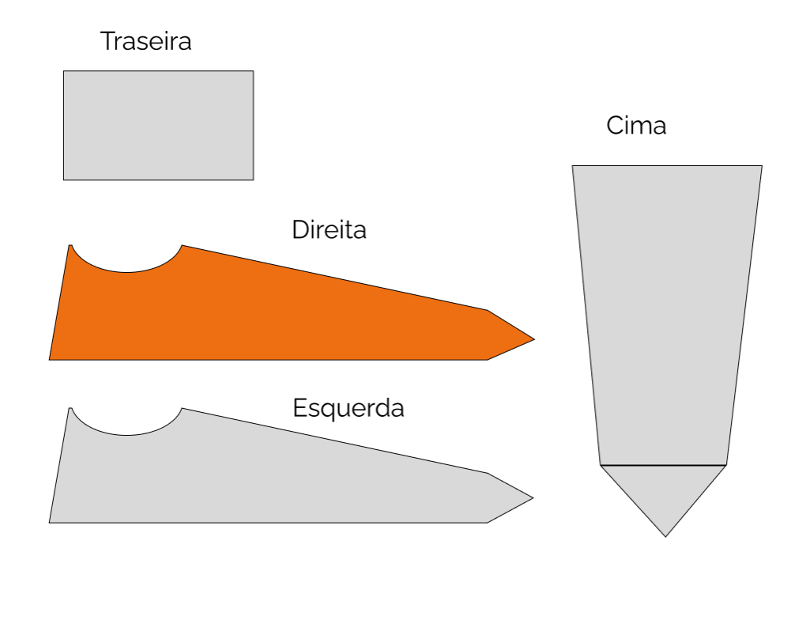
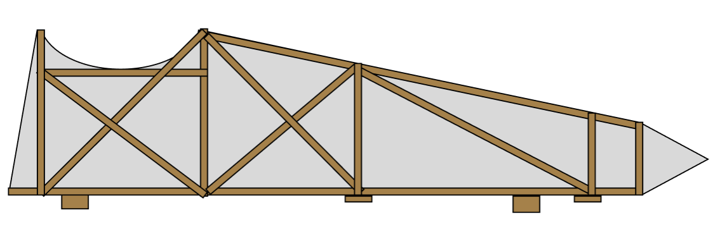
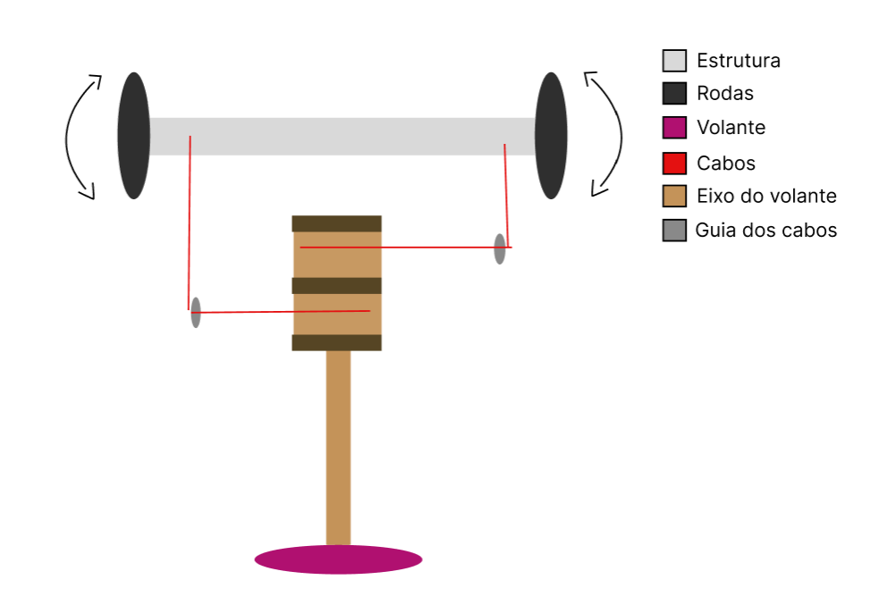
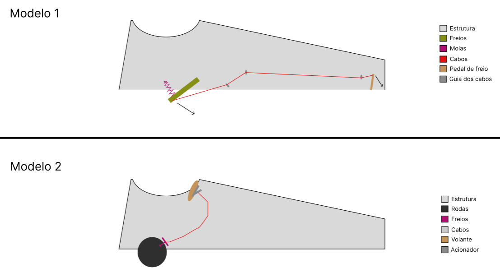
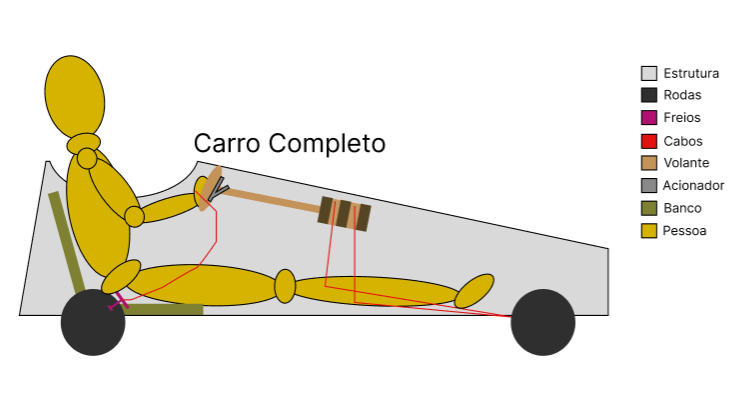

Mini Shelbinho
O carrinho mais brabo da região
Início
O carrinho de rolimã é um veículo simples, porém emocionante, que proporciona diversão e adrenalina. Ele é composto por uma estrutura geralmente feita de madeira, equipada com rodas e rolamentos para permitir o deslizamento suave.
Este carrinho de rolimã foi construído com cuidado e criatividade, utilizando materiais reciclados, como madeira reaproveitada e rodas de bicicleta usadas. Sua estrutura foi cuidadosamente projetada para garantir estabilidade e segurança durante as corridas.
Além da construção, foram aplicadas técnicas de personalização, permitindo que o carrinho se destacasse dos demais. Pinturas vibrantes e adesivos foram utilizados para imprimir personalidade e estilo ao veículo.
Durante a pesquisa, descobriu-se que a pilotagem do carrinho de rolimã requer habilidades e técnicas específicas. A equipe responsável pelo projeto dedicou tempo para aprender as melhores maneiras de realizar curvas suaves, manter o equilíbrio e controlar a velocidade.
No contexto escolar, o carrinho de rolimã também pode ser uma ferramenta educativa. Ele estimula o trabalho em equipe, a criatividade, o planejamento e a solução de problemas. Além disso, proporciona uma oportunidade única de vivenciar conceitos físicos, como força, atrito e gravidade, de forma prática e empolgante.
Galeria
materiais
- Madeira Recliclada
- MDF Recliclado
- 2x Rodas de Rolimã
- 2x Rodas de Carrinho de Feira
- Cordas
- Eixo de Metal
- Parafusos
- Pregos
- Tinta
- Ganchos
- Porcas
- Braçadeiras
- Power Bank
- Fita Led
- Sistema de Som
projeto
O projeto é constituído de 5 partes principais que foram planejadas sendo elas: A carcaça, a estrutura, a direção, os freios e o restante.
Carcaça
Resolvemos fazer o carrinho fechado para ter um estilo diferente e mais aerodinâmica, apresentado abaixo.
Estrutura
A estrutura será feita de madeira mais forte, já a carcaça ao redor será de MDF ou outras placas.
Direção
Como vamos fazer o carrinho fechado, queremos fazer um volante para as mãos que será conectado a cabos que irão girar as rodas dianteiras.
Freios
O sistema de freios foi dividido em duas opções, a principal seria utilizar um freio de bicicleta nas rodas traseiras acionado pelo volante (Modelo 2), mas não temos certeza sobre o tamanho das rodas e se vai encaixar o freio. Caso não encaixar planejamos uma reconstrução de um freio normal de um carrinho, só com o diferencial de ser acionado por um pedal (Modelo 1).
Forma final
Aqui temos a representação com todos os componentes apresentados mais o banco e um boneco de amostra:
Explicação
Existem diversos fatores que podem (e vão) afetar a velocidade e estabilidade do carrinho. A velocidade do carrinho é muito influenciada por alguns fatores: a inercia, que mantém o carrinho na mesma velocidade, mesmo após sair de uma superfície curva, a resistência do ar, que junto com a aerodinâmica afeta a velocidade do carrinho, e o peso que o carrinho leva, que quanto mais tiver, mais rápido ficará o carrinho em superfícies inclinadas, porém mais lento em superfícies planas.